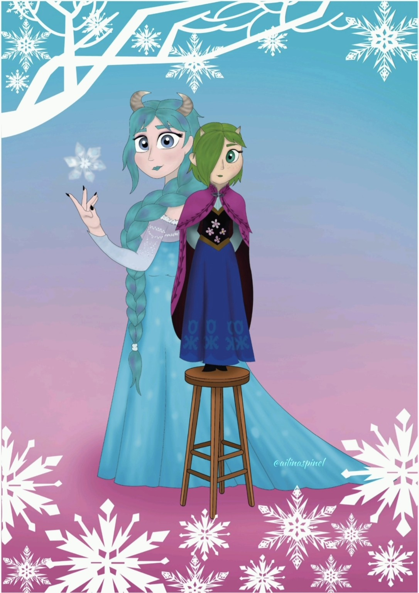

PROYECTO 01
Monsters, Inc. × Frozen
Una fusión creativa entre dos universos cinematográficos: el mundo monstruoso de Monsters, Inc. y el reino congelado de Frozen. Esta propuesta de fanart combina personajes y elementos visuales de ambas historias.
Herramientas: Adobe Photoshop y Adobe Illustrator.